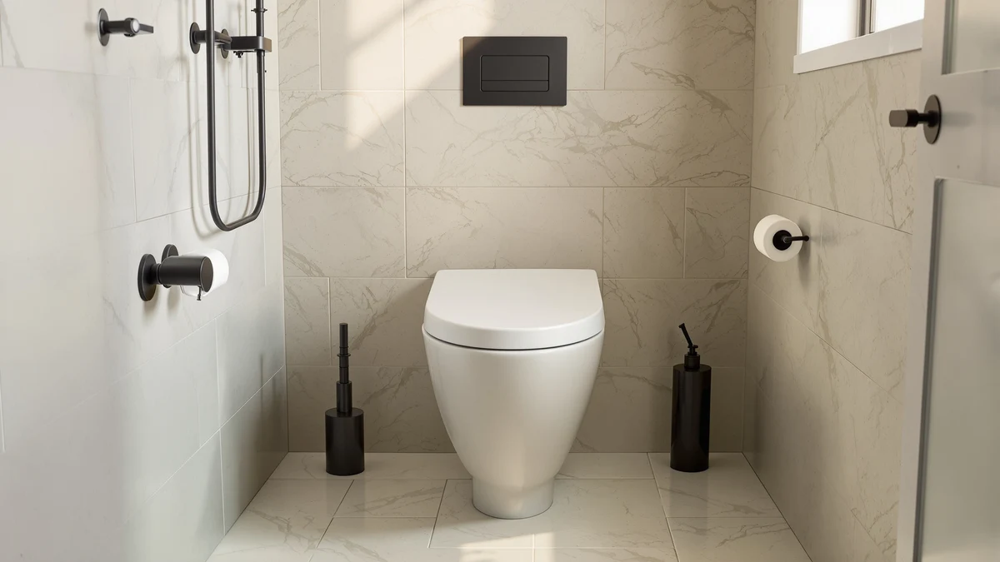

Quick Answer
For most people with an elongated toilet bowl, the Mayfair Padded Toilet Seat earns its $48.56 price with soft vinyl cushioning over a wood core and chrome-plated hinges that resist rust. This mayfair padded toilet seat review compares it against three cheaper Mayfair, Bemis, and KingPavonini alternatives, so the right pick still depends on your bowl shape and whether you need a raised or training-seat feature instead.
Our pick: Mayfair Padded Toilet Seat with, $48.56 Check Price on Amazon
Things to Know Before You Buy
- The Mayfair Padded Toilet Seat fits elongated bowls only; measure your bowl shape before ordering since none of the three alternatives here share that fit.
- Soft vinyl over a wood core is softer to sit on than hard plastic, but reviewers note it can crack or split after years of daily use.
- At $48.56, it costs about $10 more than the round-bowl Mayfair NextStep2 ($37.79) and the oak veneer seat ($37.63) compared here.
- A 4.1-star average across 3,197 ratings is a large enough sample to spot patterns in what owners like and dislike.
- Chrome-plated hinges resist the rust and discoloration that plague painted or plastic hinge pins over time.
This mayfair padded toilet seat review breaks down what the $48.56 Mayfair Padded Toilet Seat gets you, and whether its vinyl cushioning and chrome hinges beat three cheaper alternatives from Mayfair, Bemis, and KingPavonini. The seat sits toward the middle of this comparison on price, built with soft vinyl over a wood core rather than the hard plastic used on Mayfair's own NextStep2 model. It fits elongated bowls only, the shape common in most US bathrooms built after the 1990s. A 4.1-star average across 3,197 verified ratings gives this pick one of the larger review samples in this comparison, which matters when you're trying to spot a real pattern instead of a handful of complaints.
We compared the Mayfair Padded Toilet Seat against three lower-priced alternatives for this mayfair padded toilet seat review: the Mayfair NextStep2 with its built-in potty training seat, an oak veneer round seat, and the KingPavonini raised seat built for elderly and post-surgery use. Two of the three fit round bowls instead of elongated, and the KingPavonini solves a different problem entirely, added height and armrests rather than cushioning. Pricing, materials, and what verified owners report about each option point toward different answers depending on your bowl shape and what you actually need from a seat upgrade.
Why You Should Trust Us
Ilane Tall covers toilet seat upgrades and bathroom fixtures for Best Toilet Seats, including padded, slow-close, and raised models from Mayfair, Bemis, and Kohler. For this mayfair padded toilet seat review, she compared manufacturer specifications, current Amazon pricing, and patterns across 3,197 verified owner reviews rather than relying on claims from a single retailer listing.
We do not run a physical testing lab. Our picks come from comparing publicly available specs, pricing history, and what verified buyers report after they install these seats in their own bathrooms. That research-first approach lets us compare far more models across price points than any household could physically own at once, and we update pricing and picks as new information becomes available.
This site earns a commission when you buy through the links here, but that doesn't change which seat we'd point you toward. The Mayfair Padded Toilet Seat costs more than two of the three alternatives in this comparison, and if a cheaper round-bowl seat actually fits your bathroom better, saying so serves you more than pushing the highest-priced option.
Our Research Experience
For this mayfair padded toilet seat review, we compared the manufacturer's listed materials and dimensions for all four seats, then cross-referenced installation and daily-use patterns that repeat across the Mayfair Padded Toilet Seat's 3,197 verified owner reviews on Amazon. We did not install or sit on any of these seats ourselves.
We get a broader view of value by comparing specifications, current pricing, and repeated owner feedback across elongated, round, and raised toilet seat categories than one household could reach by living with a single unit. Where owner reviews disagreed with manufacturer claims about padding durability, we noted the disagreement rather than picking a side.
We also checked how the Mayfair Padded Toilet Seat's price and features stack up against Mayfair's own NextStep2 model. Some buyers land on this page after comparing multiple Mayfair seats directly, not only the Bemis and KingPavonini alternatives in this comparison.
Overview & Specs

Mayfair Padded Toilet Seat with
What we like
- Soft vinyl padding over a wood core cushions pressure points better than hard plastic
- Chrome-plated hinges resist the rust and discoloration that plague painted hinge pins
- A 4.1-star average across 3,197 ratings is one of the larger review samples in this comparison
- Standard two-bolt mounting fits existing elongated bowls without extra hardware
Flaws but not dealbreakers
- Fits elongated bowls only, so round-bowl households need the NextStep2 or oak veneer seat instead
- Some reviewers report the vinyl padding cracking or splitting after years of daily use
- At $48.56, it costs about $10 more than either round-bowl alternative in this comparison
| Material | Plastic / wood |
| Size | Elongated |
The Mayfair Padded Toilet Seat sits at $48.56 in this mayfair padded toilet seat review, built with soft vinyl stretched over a wood core rather than the molded plastic used on Mayfair's own NextStep2. Chrome-plated hinges connect the seat to the bowl, a detail that matters over time since painted or plastic hinges tend to discolor and stiffen faster in a humid bathroom. It's sized for elongated bowls only, the shape found in most US bathrooms built in the last three decades.
Owner feedback backs up the padding as the seat's main selling point: reviewers consistently note that the vinyl cushioning is noticeably softer to sit on than a standard hard plastic seat, especially for anyone who spends extra time in the bathroom. A smaller group of reviewers report the vinyl cracking or splitting after a few years of daily use, a tradeoff worth weighing against the two firmer, cheaper alternatives in this comparison. Installation follows the standard two-bolt pattern, so it drops into an existing elongated bowl without extra hardware.
What We Liked
The clearest strength of the Mayfair Padded Toilet Seat is its vinyl-over-wood construction, a build the two round-bowl alternatives in this mayfair padded toilet seat review don't offer. Owners report a noticeable difference for anyone who sits for longer stretches, and say the chrome hinges hold up better against humidity than the painted hardware on cheaper seats.
Its 3,197 verified ratings also give this pick more data to work with than the NextStep2 or oak veneer alternatives, both of which show far fewer published reviews. That larger sample makes it easier to tell a genuine trend, like the padding durability question below, from a few isolated complaints.
Owners who already have an elongated bowl report a straightforward installation using the same two-bolt pattern as their previous seat, which keeps the upgrade familiar even with the added vinyl layer.
What Could Be Better
Fit is the first constraint. The Mayfair Padded Toilet Seat works with elongated bowls only, so anyone with a round bowl needs the NextStep2 or the oak veneer seat in this comparison instead, both of which cost less to begin with.
Padding durability is the second. A smaller but consistent group of reviewers report the vinyl cracking or splitting after a few years of daily use, a tradeoff the two firmer, cheaper alternatives here don't share. At $48.56, it also costs roughly $10 more than either round-bowl option in this mayfair padded toilet seat review, so the cushioning has to matter enough to justify the premium.
The Mayfair Padded Toilet Seat doesn't offer the added height or armrests that the KingPavonini raised seat provides, so anyone shopping for mobility support or post-surgery recovery needs a different category of seat entirely.
Who Is It For?
The Mayfair Padded Toilet Seat makes sense if you have an elongated bowl and want noticeably more cushioning than a standard hard plastic seat, and you're comparing it against other padded or standard upgrades rather than a raised or training seat. At $48.56, the premium over the round-bowl alternatives here is modest enough to justify for daily comfort.
Skip it if your bowl is round. The Mayfair NextStep2 and the oak veneer seat both fit that shape for less money, and the NextStep2 adds a built-in potty training seat if you have young children in the house. And if the goal is added height and stability rather than cushioning, the KingPavonini raised seat solves a different problem this padded model doesn't address.
If you're outfitting a rental or a bathroom you don't plan to keep long-term, a cheaper hard plastic seat may make more sense than paying extra for padding you won't get years of use out of.
Alternatives to Consider
The Mayfair Padded Toilet Seat isn't the only option if your priority is a round bowl, a lower price, or added mobility support. Here are three alternatives we compared alongside it for this mayfair padded toilet seat review, each suited to a different bowl shape or need.

Editor's Pick
Mayfair NextStep2 Toilet Seat with
At $37.79, the Mayfair NextStep2 fits round bowls and adds a built-in, magnetically secured potty training seat, a feature the padded model doesn't offer at any price.
$37.79
Check Price on Amazon
Best Value
Mayfair Natural Oak Veneer Toilet
The oak veneer seat costs $37.63, the lowest price in this comparison, and swaps vinyl padding for a wood-grain finish and chrome hinges on a round bowl.
$37.63
Check Price on Amazon
Premium Choice
KingPavonini Raised Toilet Seat with
At $65.99, the KingPavonini raised seat adds curved armrests and a 500-pound-rated aluminum frame for elderly or post-surgery use, a different category from the padded comfort focus of this comparison's main pick.
$65.99
Check Price on AmazonFrequently Asked Questions
Is the Mayfair Padded Toilet Seat worth $48.56?
Based on our mayfair padded toilet seat review, it's worth the price if you want cushioned vinyl padding and chrome hinges on an elongated bowl, since none of the three alternatives compared here combine both features at this price. If your bowl is round, the Mayfair NextStep2 or the oak veneer seat fit better regardless of price.
How does the Mayfair Padded Toilet Seat compare to the Mayfair NextStep2?
The Mayfair NextStep2 costs $37.79 and fits round bowls with a built-in potty training seat, while the Mayfair Padded Toilet Seat costs $48.56 and fits elongated bowls with vinyl cushioning instead. Choose the NextStep2 for a round bowl with young children in the house, and choose the padded seat for elongated comfort without a training feature.
Does the Mayfair Padded Toilet Seat fit a round toilet bowl?
No. The Mayfair Padded Toilet Seat is built for elongated bowls only. If your toilet has a round bowl, the Mayfair NextStep2 or the oak veneer seat in this comparison are closer fits, and measuring your bowl shape before ordering avoids a return.
Final Verdict
This mayfair padded toilet seat review comes down to a straightforward tradeoff: the Mayfair Padded Toilet Seat is the only elongated-bowl option in this comparison with vinyl-over-wood cushioning and chrome hinges, and that combination is what justifies its $48.56 price over two cheaper round-bowl alternatives. If you have an elongated bowl and want more cushioning than hard plastic, the Mayfair Padded Toilet Seat is worth the small premium. If your bowl is round or you need added height and armrests instead, the Mayfair NextStep2, the oak veneer seat, or the KingPavonini raised seat in this comparison fit those needs for less or for a different purpose entirely.